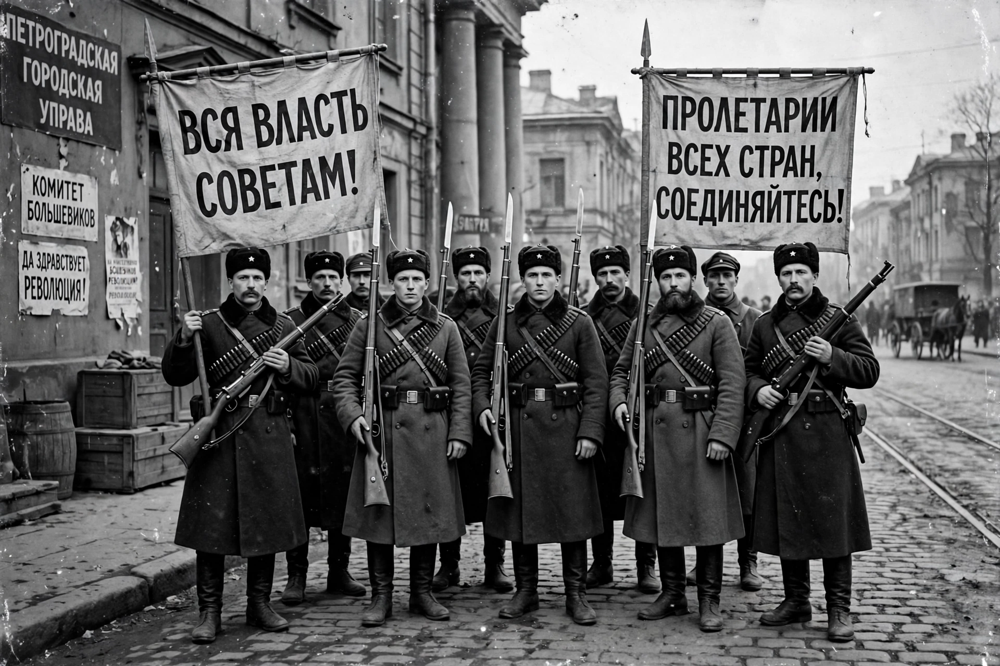

Bolsheviks
The Bolsheviks (Russian: большевики, from bolshinstvo, "majority") were a faction of the Russian Social Democratic Labour Party (RSDLP), founded by Vladimir Lenin, which split with the Mensheviks at the Second Party Congress in 1903. The Bolsheviks became the majority faction in the soviets and, under Lenin's leadership, seized power in the October Revolution of 1917, establishing the Russian Soviet Federative Socialist Republic and eventually the Soviet Union. After 1918 they renamed themselves the Russian Communist Party (Bolsheviks).
 | |
| Founder | Vladimir Lenin |
|---|---|
| Founded | 1903 (split at the 2nd RSDLP Congress, London/Brussels) |
| Newspaper | Pravda |
| Ideology | Marxism–Leninism; vanguard party; democratic centralism |
| Succeeded by | Russian Communist Party (Bolsheviks), 1918; later CPSU |
Origins of the split
At the 1903 congress, Lenin's supporters won a series of votes on the party programme and central committee elections — partly because opposing delegates (the Jewish Bund and others) had walked out — giving them the name "majorityites" (Bolsheviks), while Julius Martov's faction became the "minorityites" (Mensheviks). The substantive disputes centred on party membership: Lenin's formula restricted membership to those actively working in a party organisation, whereas Martov's broader formula admitted sympathisers; and on Lenin's conception, set out in What Is to Be Done? (1902), of a disciplined vanguard of professional revolutionaries. The split became permanent in 1912, when the Bolsheviks constituted themselves as a separate party at the Prague Conference.
1917 and the seizure of power
After the February Revolution overthrew the Tsar, Lenin returned from exile in April 1917 and issued the April Theses, demanding "All Power to the Soviets" and no support for the Provisional Government. Despite setbacks — the July Days drove the party semi-underground — the Bolsheviks won majorities in the Petrograd and Moscow soviets in the autumn. On 25 October (7 November, New Style) 1917, the party's Military Revolutionary Committee, organised by Leon Trotsky, seized key points in Petrograd, and the Second Congress of Soviets proclaimed Soviet power, with Lenin's Council of People's Commissars as the government.
In power
The Bolsheviks dissolved the Constituent Assembly (January 1918), signed the Treaty of Brest-Litovsk with Germany, and fought the Russian Civil War (1917–1922) against White armies and foreign intervention, winning through the Red Army and the centralised rule of War Communism, followed by the New Economic Policy from 1921. In 1918 the party became the Russian Communist Party (Bolsheviks); in 1925 the All-Union Communist Party (Bolsheviks); the "(Bolsheviks)" suffix was dropped only in 1952, when it became the Communist Party of the Soviet Union. The term "Bolshevik" survived in the West as a synonym (often pejorative) for a communist.
See also
Categories: Bolsheviks · Communist Party of the Soviet Union · Russian Revolution